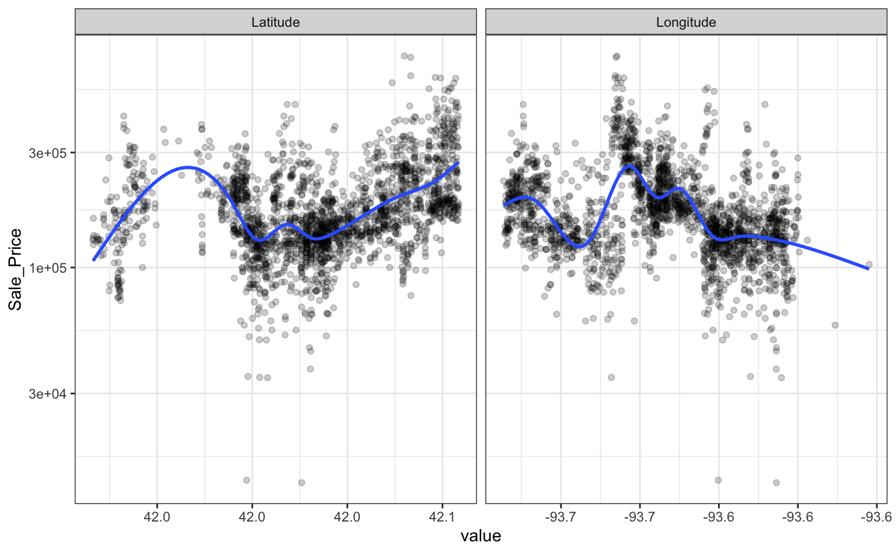
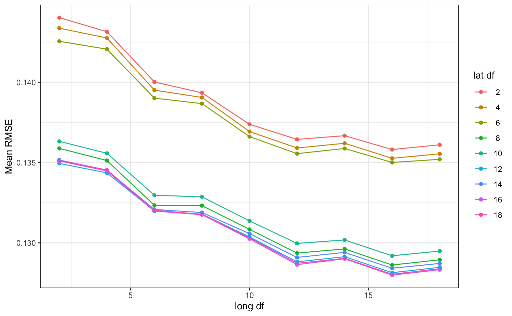
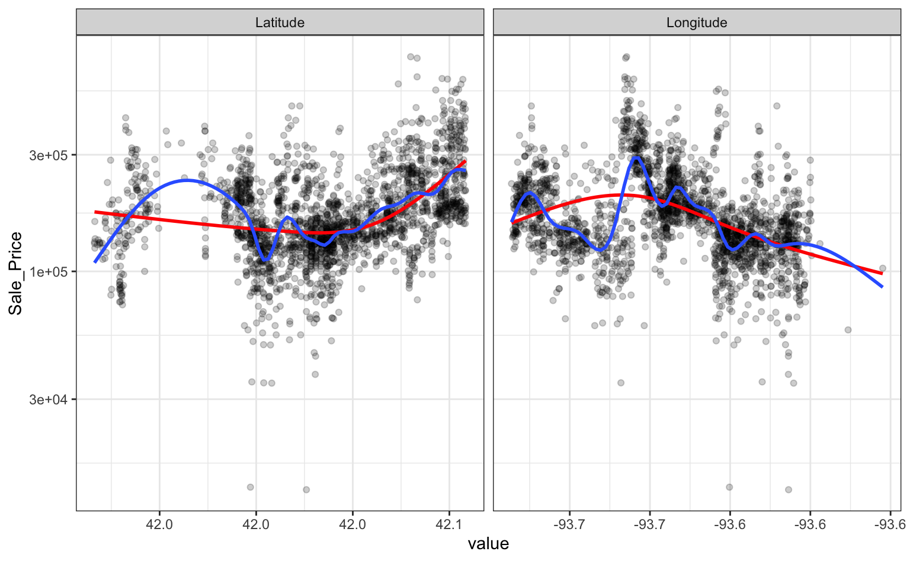
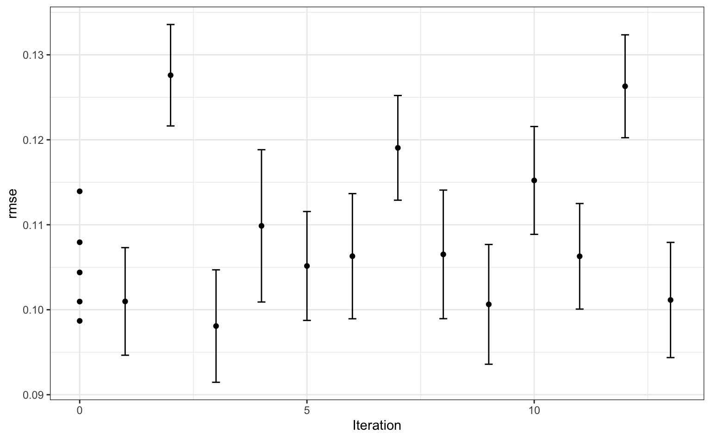

The tune package helps optimize the modeling process. Users can tag arguments in recipes and model objects for optimization. The search routines in tune can discover these arguments and evaluate candidate values until a combination with good performance is found.
As an example, let’s model the Ames housing data:
library(tidymodels)
library(tune)
library(AmesHousing)
ames <- make_ames()
set.seed(4595)
data_split <- initial_split(ames, strata = "Sale_Price")
ames_train <- training(data_split)
ames_test <- testing(data_split)For simplicity, the sale price of a house will be modeled as a function of its geo-location. These predictors appear to have nonlinear relationships with the outcome:
ames_train %>%
dplyr::select(Sale_Price, Longitude, Latitude) %>%
tidyr::pivot_longer(cols = c(Longitude, Latitude),
names_to = "predictor", values_to = "value") %>%
ggplot(aes(x = value, Sale_Price)) +
geom_point(alpha = .2) +
geom_smooth(se = FALSE) +
scale_y_log10() +
facet_wrap(~ predictor, scales = "free_x")
#> `geom_smooth()` using method = 'gam' and formula 'y ~ s(x, bs = "cs")'
These two predictors could be modeled using natural splines in conjunction with a linear model. The amount of “wiggliness” in these splines is determined by the degrees of freedom. An appropriate value of this parameter cannot be analytically determined from the data, so it is a tuning parameter (a.k.a. a hyper-parameter). A common approach is to use resampling to estimate model performance over different values of these parameters and use these results to set reasonable values.
We can tag these parameters for optimization using the tune() function:
ames_rec <-
recipe(Sale_Price ~ Longitude + Latitude, data = ames_train) %>%
step_log(Sale_Price, base = 10) %>%
step_ns(Longitude, Latitude, deg_free = tune())The package can detect these values and optimize them.
However, based on the plot above, the potential amount of non-linearity between the sale price and the predictors might be different. For example, longitude might require more flexibility than latitude. The recipe above would constrain the nonlinearity of the predictors to be the same. We can probably do better than that.
To accomplish this, individual step_ns() terms can be added to the recipe for each predictor. However, we want these to be identifiable; using the same syntax as above, we can’t tell the difference between the two deg_free parameters.
tune() has an option to provide a text annotation so that each tuning parameter has a unique identifier:
ames_rec <-
recipe(Sale_Price ~ Longitude + Latitude, data = ames_train) %>%
step_log(Sale_Price, base = 10) %>%
step_ns(Longitude, deg_free = tune("long df")) %>%
step_ns(Latitude, deg_free = tune("lat df"))The function dials::parameters() that can detect and collect the parameters that have been flagged for tuning:
parameters(ames_rec)
#> Collection of 2 parameters for tuning
#>
#> id parameter type object class
#> long df deg_free nparam[+]
#> lat df deg_free nparam[+]The dials package has default ranges for many parameters. The generic parameter function for deg_free has a fairly small range:
but there is a dials function that is more appropriate for splines:
The parameter objects can be easily changed using the update() function:
ames_param <-
ames_rec %>%
parameters() %>%
update(
`long df` = spline_degree(),
`lat df` = spline_degree()
)
ames_param
#> Collection of 2 parameters for tuning
#>
#> id parameter type object class
#> long df deg_free nparam[+]
#> lat df deg_free nparam[+]Grid search uses a pre-defined set of candidate parameters and evaluates these using resampling. The basic ingredients are:
A grid of candidate values to evaluate.
One or more performance metrics for quantifying how well the model works.
A resampling scheme that can be used to appropriately measure performance (which could be a simple validation set).
To make the grid, a data frame is needed with column names matching the “id” column above. There are several dials functions to created grids (named grid_*). For example, a space-filling design can be created by:
spline_grid <- grid_max_entropy(ames_param, size = 10)
spline_grid
#> # A tibble: 10 x 2
#> `long df` `lat df`
#> <int> <int>
#> 1 3 9
#> 2 5 7
#> 3 6 10
#> 4 8 6
#> 5 8 3
#> 6 8 8
#> 7 10 7
#> 8 4 6
#> 9 5 3
#> 10 9 10Alternately, expand.grid() also works to create a regular grid:
df_vals <- seq(2, 18, by = 2)
# A regular grid:
spline_grid <- expand.grid(`long df` = df_vals, `lat df` = df_vals)Note that a 2-degree-of-freedom model is a simple quadratic fit.
There are two other ingredients that are required before tuning.
First is a model specification. Using parsnip, a basic linear model can be used:
No tuning parameters here.
As mentioned above, a resampling specification is also needed. The Ames data set are large enough to use simple 10-fold cross-validation:
set.seed(2453)
cv_splits <- vfold_cv(ames_train, v = 10, strata = "Sale_Price")The root mean squared error will be used to measure performance (and this is the default for regression problems).
Using these objects, tune_grid() can be used1:
ames_res <- tune_grid(ames_rec, model = lm_mod, resamples = cv_splits, grid = spline_grid)The object is similar to the rsample object but with one or more extra columns:
ames_res
#> # 10-fold cross-validation using stratification
#> # A tibble: 10 x 4
#> splits id .metrics .notes
#> * <list> <chr> <list> <list>
#> 1 <split [2K/221]> Fold01 <tibble [162 × 5]> <tibble [0 × 1]>
#> 2 <split [2K/220]> Fold02 <tibble [162 × 5]> <tibble [0 × 1]>
#> 3 <split [2K/220]> Fold03 <tibble [162 × 5]> <tibble [0 × 1]>
#> 4 <split [2K/220]> Fold04 <tibble [162 × 5]> <tibble [0 × 1]>
#> 5 <split [2K/220]> Fold05 <tibble [162 × 5]> <tibble [0 × 1]>
#> 6 <split [2K/220]> Fold06 <tibble [162 × 5]> <tibble [0 × 1]>
#> 7 <split [2K/220]> Fold07 <tibble [162 × 5]> <tibble [0 × 1]>
#> 8 <split [2K/220]> Fold08 <tibble [162 × 5]> <tibble [0 × 1]>
#> 9 <split [2K/220]> Fold09 <tibble [162 × 5]> <tibble [0 × 1]>
#> 10 <split [2K/218]> Fold10 <tibble [162 × 5]> <tibble [0 × 1]>The .metrics column has all of the holdout performance estimates2 for each parameter combination:
ames_res$.metrics[[1]]
#> # A tibble: 162 x 5
#> `long df` `lat df` .metric .estimator .estimate
#> <dbl> <dbl> <chr> <chr> <dbl>
#> 1 2 2 rmse standard 0.150
#> 2 2 2 rsq standard 0.362
#> 3 4 2 rmse standard 0.150
#> 4 4 2 rsq standard 0.360
#> 5 6 2 rmse standard 0.146
#> 6 6 2 rsq standard 0.395
#> 7 8 2 rmse standard 0.145
#> 8 8 2 rsq standard 0.399
#> 9 10 2 rmse standard 0.144
#> 10 10 2 rsq standard 0.406
#> # … with 152 more rowsTo get the average metric value for each parameter combination, collect_metrics() can be put to use:
estimates <- collect_metrics(ames_res)
estimates
#> # A tibble: 162 x 7
#> `long df` `lat df` .metric .estimator mean n std_err
#> <dbl> <dbl> <chr> <chr> <dbl> <int> <dbl>
#> 1 2 2 rmse standard 0.144 10 0.00221
#> 2 2 2 rsq standard 0.351 10 0.0158
#> 3 2 4 rmse standard 0.143 10 0.00233
#> 4 2 4 rsq standard 0.356 10 0.0156
#> 5 2 6 rmse standard 0.143 10 0.00221
#> 6 2 6 rsq standard 0.363 10 0.0161
#> 7 2 8 rmse standard 0.136 10 0.00246
#> 8 2 8 rsq standard 0.422 10 0.0164
#> 9 2 10 rmse standard 0.136 10 0.00244
#> 10 2 10 rsq standard 0.419 10 0.0160
#> # … with 152 more rowsThe values in the mean column are the averages of the 10 resamples. The best RMSE values corresponded to:
rmse_vals <-
estimates %>%
dplyr::filter(.metric == "rmse") %>%
arrange(mean)
rmse_vals
#> # A tibble: 81 x 7
#> `long df` `lat df` .metric .estimator mean n std_err
#> <dbl> <dbl> <chr> <chr> <dbl> <int> <dbl>
#> 1 16 16 rmse standard 0.128 10 0.00244
#> 2 16 18 rmse standard 0.128 10 0.00247
#> 3 16 12 rmse standard 0.128 10 0.00235
#> 4 18 16 rmse standard 0.128 10 0.00239
#> 5 18 18 rmse standard 0.128 10 0.00242
#> 6 16 14 rmse standard 0.128 10 0.00229
#> 7 18 12 rmse standard 0.128 10 0.00231
#> 8 16 8 rmse standard 0.129 10 0.00240
#> 9 12 16 rmse standard 0.129 10 0.00253
#> 10 18 14 rmse standard 0.129 10 0.00225
#> # … with 71 more rowsSmaller degrees of freedom values correspond to more linear functions, but the grid search indicates that more nonlinearity is better. What was the relationship between these two parameters and RMSE?
rmse_vals %>%
# convert to factors for easier plotting
mutate(`lat df` = factor(format(`lat df`))) %>%
ggplot(aes(x = `long df`, y = mean, col = `lat df`)) +
geom_point() +
geom_line() +
ylab("Mean RMSE")
Interestingly, latitude does not do well with degrees of freedom less than 8. How nonlinear are the optimal degrees of freedom?
Let’s plot these spline functions over the data for booth good and bad values of deg_free:
ames_train %>%
dplyr::select(Sale_Price, Longitude, Latitude) %>%
tidyr::pivot_longer(cols = c(Longitude, Latitude),
names_to = "predictor", values_to = "value") %>%
ggplot(aes(x = value, Sale_Price)) +
geom_point(alpha = .2) +
geom_smooth(se = FALSE, method = lm, formula = y ~ splines::ns(x, df = 3), col = "red") +
geom_smooth(se = FALSE, method = lm, formula = y ~ splines::ns(x, df = 16)) +
scale_y_log10() +
facet_wrap(~ predictor, scales = "free_x")
Looking at these plots, the smaller degrees of freedom (red) are clearly under-fitting. Visually, the more complex splines (blue) might indicate that there is overfitting but this would result in poor RMSE values when computed on the hold-out data.
Based on these results, a new recipe would be created with the optimized values (using the entire training set) and this would be combined with a linear model created form the entire training set.
Instead of a linear regression, a nonlinear model might provide good performance. A K-nearest-neighbor fit will also be optimized. For this example, the number of neighbors and the distance weighting function will be optimized:
# requires the kknn package
knn_mod <-
nearest_neighbor(neighbors = tune(), weight_func = tune()) %>%
set_engine("kknn") %>%
set_mode("regression")The easiest approach to optimize the pre-processing and model parameters is to bundle these objects into a workflow:
library(workflows)
knn_wflow <-
workflow() %>%
add_model(knn_mod) %>%
add_recipe(ames_rec)From this, the parameter set can be used to modify the range and values of parameters being optimized3:
knn_param <-
knn_wflow %>%
parameters() %>%
update(
`long df` = spline_degree(c(2, 18)),
`lat df` = spline_degree(c(2, 18)),
neighbors = neighbors(c(3, 50)),
weight_func = weight_func(values = c("rectangular", "inv", "gaussian", "triangular"))
)This parameter collection can be passed to the grid functions via the param_info arguments.
Instead of using grid search, an iterative method called Bayesian optimization can be used. This takes an initial set of results and tries to predict the next tuning parameters to evaluate.
Although no grid is required, the process requires a few additional pieces of information:
A description of the search space. At a minimum, the would consist of ranges for numeric values and a list of values for categorical tuning parameters.
An acquisition function that helps score potential tuning parameter values.
A model for analyzing and making predictions of the best tuning parameter values. A Gaussian Process model is typical and used here.
The code to conduct the search is:
ctrl <- control_bayes(verbose = TRUE)
set.seed(8154)
knn_search <- tune_bayes(knn_wflow, resamples = cv_splits, initial = 5, iter = 20,
param_info = knn_param, control = ctrl)
#>
#> > Generating a set of 5 initial parameter results
#> ✓ Initialization complete
#>
#> Optimizing rmse using the expected improvement
#>
#> ── Iteration 1 ───────────────────────────────────────────────────────────────────────────────────────────────────────
#>
#> i Current best: rmse=0.09869 (@iter 0)
#> i Gaussian process model
#> ✓ Gaussian process model
#> i Generating 4658 candidates
#> i Predicted candidates
#> i neighbors=5, weight_func=rectangular, long df=18, lat df=10
#> i Estimating performance
#> ✓ Estimating performance
#> ⓧ Newest results: rmse=0.09998 (+/-0.00331)
#>
#> ── Iteration 2 ───────────────────────────────────────────────────────────────────────────────────────────────────────
#>
#> i Current best: rmse=0.09869 (@iter 0)
#> i Gaussian process model
#> ✓ Gaussian process model
#> i Generating 4685 candidates
#> i Predicted candidates
#> i neighbors=12, weight_func=inv, long df=16, lat df=18
#> i Estimating performance
#> ✓ Estimating performance
#> ♥ Newest results: rmse=0.09799 (+/-0.00326)
#>
#> ── Iteration 3 ───────────────────────────────────────────────────────────────────────────────────────────────────────
#>
#> i Current best: rmse=0.09799 (@iter 2)
#> i Gaussian process model
#> ✓ Gaussian process model
#> i Generating 4694 candidates
#> i Predicted candidates
#> i neighbors=6, weight_func=gaussian, long df=18, lat df=17
#> i Estimating performance
#> ✓ Estimating performance
#> ⓧ Newest results: rmse=0.09841 (+/-0.00308)
#>
#> ── Iteration 4 ───────────────────────────────────────────────────────────────────────────────────────────────────────
#>
#> i Current best: rmse=0.09799 (@iter 2)
#> i Gaussian process model
#> ✓ Gaussian process model
#> i Generating 4703 candidates
#> i Predicted candidates
#> i neighbors=4, weight_func=inv, long df=5, lat df=2
#> i Estimating performance
#> ✓ Estimating performance
#> ⓧ Newest results: rmse=0.1003 (+/-0.0028)
#>
#> ── Iteration 5 ───────────────────────────────────────────────────────────────────────────────────────────────────────
#>
#> i Current best: rmse=0.09799 (@iter 2)
#> i Gaussian process model
#> ✓ Gaussian process model
#> i Generating 4686 candidates
#> i Predicted candidates
#> i neighbors=50, weight_func=inv, long df=18, lat df=14
#> i Estimating performance
#> ✓ Estimating performance
#> ⓧ Newest results: rmse=0.1025 (+/-0.00311)
#>
#> ── Iteration 6 ───────────────────────────────────────────────────────────────────────────────────────────────────────
#>
#> i Current best: rmse=0.09799 (@iter 2)
#> i Gaussian process model
#> ✓ Gaussian process model
#> i Generating 4684 candidates
#> i Predicted candidates
#> i neighbors=5, weight_func=rectangular, long df=2, lat df=18
#> i Estimating performance
#> ✓ Estimating performance
#> ⓧ Newest results: rmse=0.1116 (+/-0.0039)
#>
#> ── Iteration 7 ───────────────────────────────────────────────────────────────────────────────────────────────────────
#>
#> i Current best: rmse=0.09799 (@iter 2)
#> i Gaussian process model
#> ✓ Gaussian process model
#> i Generating 4692 candidates
#> i Predicted candidates
#> i neighbors=49, weight_func=rectangular, long df=18, lat df=16
#> i Estimating performance
#> ✓ Estimating performance
#> ⓧ Newest results: rmse=0.1175 (+/-0.00265)
#>
#> ── Iteration 8 ───────────────────────────────────────────────────────────────────────────────────────────────────────
#>
#> i Current best: rmse=0.09799 (@iter 2)
#> i Gaussian process model
#> ✓ Gaussian process model
#> i Generating 4717 candidates
#> i Predicted candidates
#> i neighbors=50, weight_func=gaussian, long df=2, lat df=16
#> i Estimating performance
#> ✓ Estimating performance
#> ⓧ Newest results: rmse=0.121 (+/-0.00278)
#>
#> ── Iteration 9 ───────────────────────────────────────────────────────────────────────────────────────────────────────
#>
#> i Current best: rmse=0.09799 (@iter 2)
#> i Gaussian process model
#> ✓ Gaussian process model
#> i Generating 4703 candidates
#> i Predicted candidates
#> i neighbors=12, weight_func=inv, long df=15, lat df=2
#> i Estimating performance
#> ✓ Estimating performance
#> ⓧ Newest results: rmse=0.1032 (+/-0.00324)
#>
#> ── Iteration 10 ──────────────────────────────────────────────────────────────────────────────────────────────────────
#>
#> i Current best: rmse=0.09799 (@iter 2)
#> i Gaussian process model
#> ✓ Gaussian process model
#> i Generating 4679 candidates
#> i Predicted candidates
#> i neighbors=49, weight_func=rectangular, long df=2, lat df=2
#> i Estimating performance
#> ✓ Estimating performance
#> ⓧ Newest results: rmse=0.121 (+/-0.00274)
#>
#> ── Iteration 11 ──────────────────────────────────────────────────────────────────────────────────────────────────────
#>
#> i Current best: rmse=0.09799 (@iter 2)
#> i Gaussian process model
#> ✓ Gaussian process model
#> i Generating 4699 candidates
#> i Predicted candidates
#> i neighbors=49, weight_func=inv, long df=11, lat df=13
#> i Estimating performance
#> ✓ Estimating performance
#> ⓧ Newest results: rmse=0.1011 (+/-0.00313)
#>
#> ── Iteration 12 ──────────────────────────────────────────────────────────────────────────────────────────────────────
#>
#> i Current best: rmse=0.09799 (@iter 2)
#> i Gaussian process model
#> ✓ Gaussian process model
#> i Generating 4675 candidates
#> i Predicted candidates
#> i neighbors=42, weight_func=inv, long df=2, lat df=8
#> i Estimating performance
#> ✓ Estimating performance
#> ⓧ Newest results: rmse=0.1046 (+/-0.00298)
#> ! No improvement for 10 iterations; returning current results.Visually, the performance gain was:
autoplot(knn_search, type = "performance", metric = "rmse")
The best results here were:
collect_metrics(knn_search) %>%
dplyr::filter(.metric == "rmse") %>%
arrange(mean)
#> # A tibble: 17 x 10
#> neighbors weight_func `long df` `lat df` .iter .metric .estimator mean
#> <int> <chr> <int> <int> <dbl> <chr> <chr> <dbl>
#> 1 12 inv 16 18 2 rmse standard 0.0980
#> 2 6 gaussian 18 17 3 rmse standard 0.0984
#> 3 28 inv 16 10 0 rmse standard 0.0987
#> 4 5 rectangular 18 10 1 rmse standard 0.100
#> 5 4 inv 5 2 4 rmse standard 0.100
#> 6 5 gaussian 8 14 0 rmse standard 0.101
#> 7 49 inv 11 13 11 rmse standard 0.101
#> 8 50 inv 18 14 5 rmse standard 0.102
#> 9 12 inv 15 2 9 rmse standard 0.103
#> 10 42 inv 2 8 12 rmse standard 0.105
#> 11 36 gaussian 9 6 0 rmse standard 0.105
#> 12 5 rectangular 2 18 6 rmse standard 0.112
#> 13 18 rectangular 13 3 0 rmse standard 0.114
#> 14 49 rectangular 18 16 7 rmse standard 0.117
#> 15 49 rectangular 2 2 10 rmse standard 0.121
#> 16 50 gaussian 2 16 8 rmse standard 0.121
#> 17 47 rectangular 3 16 0 rmse standard 0.127
#> # … with 2 more variables: n <int>, std_err <dbl>With this intrinsically nonlinear model there is less reliance on the nonlinear terms created by the recipe.
A simple R model formula could have been used here, such as log10(Sale_Price) ~ Longitude + Latitude. A recipe is not required.↩︎
tune has default measures of performance that it uses if none are specified. Here the RMSE and R2 are estimated. This can be changed using the metrics option.↩︎
One of the tuning parameters (weight_func) is categorical and, by default, has 10 unique values. The model used to predict new test parameters is a Gaussian process model, and this can become slow to fit when the number of tuning parameters is large or when a categorical parameter generates many dummy variables. We’ve reduced the number of categories for this parameter to speed things up a bit.↩︎